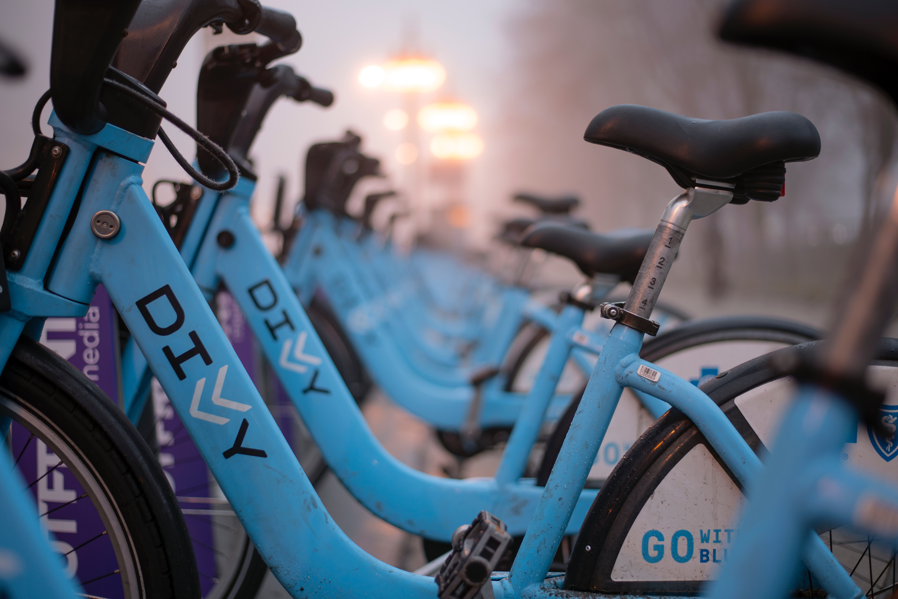

Divvy Bike-Sharing case study
Photo by Mariusz Pierog on Unsplash
1. Introduction
Divvy, like other bike share systems, consists of a fleet of classic and electrical bikes that are locked into a network of docking stations. The bikes can be unlocked from one station and returned to any other station in the system. The bikes are available for use 24 hours/day, 7 days/week, 365 days/year, and riders have access to all bikes and stations across the system.
There are two types of customers, the casual users (customers who purchase single-ride or one-day passes) and annual members (customers who purchase annual memberships).
The objective of this case study is to find key differences between the two kinds of customers, that could help the marketing team design strategies aimed at converting casual users to annual members.
The dataset is provided by Divvy Bikes, a Chicago bike-sharing company (license-agreement).
The case study covers a period of 12 months, from October 2021 to September 2022.
2. Details about the dataset
- “Each trip is anonymized and includes:
- Trip start day and time
- Trip end day and time
- Trip start station
- Trip end station
- Rider type (Member, Single Ride, and Day Pass)” (source: Divvy bikes website)
- “The data has been processed to remove trips that are taken by staff as they service and inspect the system; and any trips that were below 60 seconds in length (potentially false starts or users trying to re-dock a bike to ensure it was secure).” (source: Divvy bikes website)
- Time period: 1st oct 2021 - 30th sept 2022
- Data organization: monthly csv files
- Importing to Power BI Desktop and combining the csv files resulted in a dataset of 5,828,235 rows
- Limitations:
- Station information (start and end station names and IDs) missing for 895,032 out of 5,838,235 entries
3. A summary of the analysis
- Added columns:
- trip_duration (number of minutes)
- weekday
- avg_num_rides_per_day
- Added tables:
- weekday_order - to sort days of the week
- changed docked_bike to classic_bike after checking with a Divvy data center representative via email: "there are two kinds of bikes: electric and non-electric. The non-electric bikes are nowadays labelled as classic_bike and docked_bike. Hence, if you see docked_bike and classic_bike in the same dataset, know that you can categorize them together, as they are physically and functionally the same".